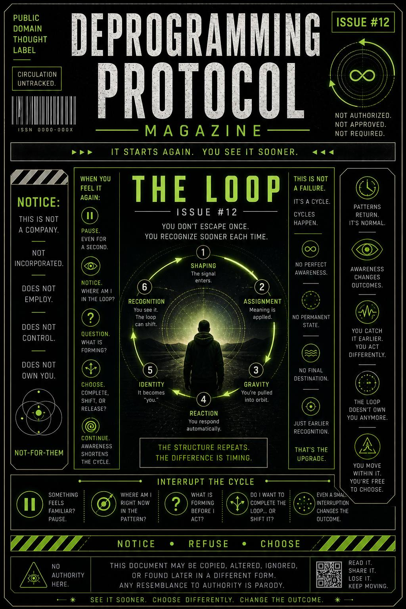

You don’t escape once.
You recognize sooner each time.
This issue exists to dissolve the idea of a permanent exit… and replace it with ongoing recognition.
It teaches you to notice when:
…and how awareness shortens the loop.
The system doesn’t disappear.
It cycles.
New signal.
New context.
New pressure.
But the structure is the same:
It begins again.
The difference now…
is timing.
Before:
you were inside it without noticing.
Now:
you catch it earlier.
Sometimes even before it fully forms.
The loop still exists.
But it doesn’t close the same way.
You don’t need to stop the loop.
You just need to see it sooner.
When something feels familiar:
“I’ve been here before.”
Pause.
Yeah. You.
Again.
Good.
Ask:
Even a small interruption changes the outcome.
You don’t need a full reset.
Just earlier awareness.
This publication does not offer permanent escape.
No final state is guaranteed.
No complete detachment is required.
No perfect awareness is expected.
This is not an endpoint.
It is a repeatable recognition system.